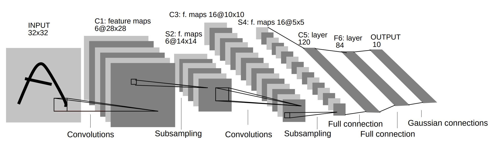
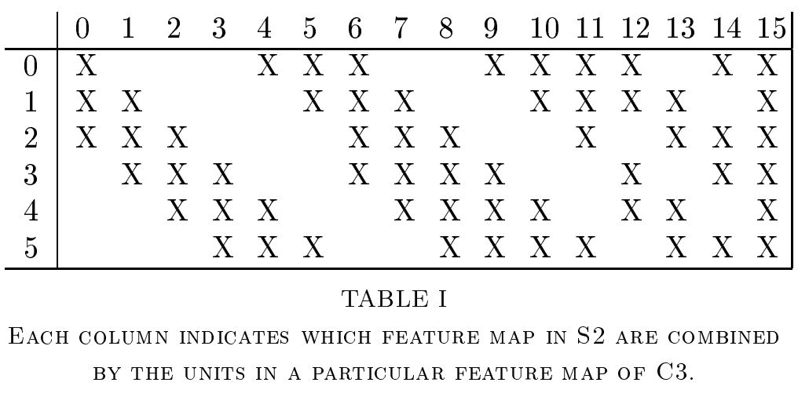

LeNet으로 MNIST 풀어보기
심층 신경망의 수학적 기초 8강 (10월 5일) 에 기반합니다.
MLP로 MNIST 풀어보기의 코드와 CNN 기초 내용에 이어지는 포스팅입니다.
LeNet 모델
여기서는 LeNet-5 모델에 대해 간단히 살펴봅니다.
LeNet은 거의 최초의 CNN을 이용한 image classification 모델이라고 할 수 있습니다. Turing award 수상자이며, 사실상 CNN의 아버지 격인 Yann Lecun의 연구팀이 1998년에 개발하였고 그 이름을 따서 LeNet이라는 이름을 갖게 되었습니다. “Gradient Based Learning Applied to Document Recognition” 라는 제목의 논문으로 발표되었는데, 제목에서 알 수 있듯 본래 손글씨로 쓰인 글자를 구분하는 task를 해결하기 위해 개발되었습니다.

이 구조는 LeNet의 전체적인 모델입니다. CNN 기초 에 있는 각 레이어별 설명을 모두 이해했다는 가정하에, LeNet의 ‘선택’ 만 살펴보겠습니다.
- 첫 레이어는 $5 \times 5$ Convolution filter 6개를 사용합니다.
- Subsampling은 average pooling을 사용하고
- Activation function으로는 tanh의 약간 변형된 형태를 사용합니다.
- 재밌는 점은 C3 Layer가 일반적인 convolution이 아니라는 점입니다. 원본 논문에 의하면, symmetry를 깨기 위해서 S2->C3 convolution을 할 때, 6개 채널 전부가 아닌 채널 일부만 사용해서 convolution을 수행합니다.  이와 같이, 0번째 컨볼루션은 0, 1, 2 채널만 쓰고… 하는 방법입니다.
- Fully connected layer를 2번 탄 다음, 마지막에는 Gaussian connection이라는 조금 복잡한 방법을 사용합니다. 후술할 이유로 인해 자세히 설명하지는 않겠습니다.
그러나 이어진 후속연구에 의해, 꼭 이런 design choice를 지킬 필요가 없음이 알려졌습니다. 구현의 단순함과 성능을 위해 모델을 조금 수정해서 다음과 같이 구현하겠습니다.
- Subsampling에는 avg pooling이 아닌 max pooling을 사용합니다.
- Activation으로 ReLU를 사용하겠습니다.
- 굳이 Symmetry를 이런 방법으로 깨지 않아도, initialization을 잘 하면 상관 없다고 합니다. Symmetry-breaking connection은 버리겠습니다.
- Gaussian connection도 하지 않아도 됩니다. 그냥 Fully connected layer로 충분하다고 합니다.
구현
구현은 MLP로 MNIST 풀어보기 와 크게 다르지 않습니다.
MNIST 데이터 로딩하는 부분의 코드를 그대로 가져옵니다.
import torch
import torch.nn as nn
from torch.optim import Optimizer
from torch.utils.data import DataLoader
from torchvision import datasets
from torchvision.transforms import transforms
train_set = datasets.MNIST(root='./mnist_data/', train=True, transform=transforms.ToTensor(), download=True)
test_set = datasets.MNIST(root='./mnist_data/', train=False, transform=transforms.ToTensor(), download=True)
train_loader = DataLoader(dataset=train_set, batch_size=1024, shuffle=True)
test_loader = DataLoader(dataset=test_set, batch_size=1, shuffle=False)
device = torch.device("cuda" if torch.cuda.is_available() else "cpu")
이제, LeNet 모델을 정의합니다. Convolution 연산을 쓴다는것 외에는 여전히 다른점이 없습니다.
모델의 정의가 위 그림과 다른점이 하나 더 있는데, 그림에서는 첫 layer에 패딩을 쓰지 않는 대신 이미지 크기가 32 by 32였지만, 우리가 가진 MNIST 데이터는 28 by 28이기 때문에 첫 레이어에서 패딩 2를 넣어 줍니다. 이후에는 위 설명과 똑같습니다. Optimizer로는 여기서도 SGD를 쓰겠습니다.
class LeNet(nn.Module):
def __init__(self) :
super(LeNet, self).__init__()
self.conv_layer1 = nn.Sequential(
nn.Conv2d(1, 6, kernel_size=5, padding=2),
nn.ReLU()
)
self.pool_layer1 = nn.MaxPool2d(kernel_size=2, stride=2)
self.conv_layer2 = nn.Sequential(
nn.Conv2d(6, 16, kernel_size=5),
nn.ReLU()
)
self.pool_layer2 = nn.MaxPool2d(kernel_size=2, stride=2)
self.C5_layer = nn.Sequential(
nn.Linear(5*5*16, 120),
nn.ReLU()
)
self.fc_layer1 = nn.Sequential(
nn.Linear(120, 84),
nn.ReLU()
)
self.fc_layer2 = nn.Linear(84, 10)
def forward(self, x) :
output = self.conv_layer1(x)
output = self.pool_layer1(output)
output = self.conv_layer2(output)
output = self.pool_layer2(output)
output = output.reshape(-1,5*5*16)
output = self.C5_layer(output)
output = self.fc_layer1(output)
output = self.fc_layer2(output)
return output
learning_rate = 0.1
EPOCH = 20
model = LeNetModern().to(device)
loss_function = torch.nn.CrossEntropyLoss()
optimizer = torch.optim.SGD(model.parameters(), lr=learning_rate)
from torchsummary import summary
print(summary(model, (1, 28, 28)))
이렇게 얻은 model의 summary는 다음과 같습니다.
----------------------------------------------------------------
Layer (type) Output Shape Param #
================================================================
Conv2d-1 [-1, 6, 28, 28] 156
ReLU-2 [-1, 6, 28, 28] 0
MaxPool2d-3 [-1, 6, 14, 14] 0
Conv2d-4 [-1, 16, 10, 10] 2,416
ReLU-5 [-1, 16, 10, 10] 0
MaxPool2d-6 [-1, 16, 5, 5] 0
Linear-7 [-1, 120] 48,120
ReLU-8 [-1, 120] 0
Linear-9 [-1, 84] 10,164
ReLU-10 [-1, 84] 0
Linear-11 [-1, 10] 850
================================================================
Total params: 61,706
Trainable params: 61,706
Non-trainable params: 0
----------------------------------------------------------------
Input size (MB): 0.00
Forward/backward pass size (MB): 0.11
Params size (MB): 0.24
Estimated Total Size (MB): 0.35
----------------------------------------------------------------
6만 개의 parameter를 갖는 매우 작은 모델입니다.
이제 데이터를 이용해서 이 모델을 실제로 훈련합니다. Train 방법도 MLP에서와 똑같습니다.
for epoch in range(EPOCH) :
for images, labels in train_loader :
images, labels = images.to(device), labels.to(device)
optimizer.zero_grad()
train_loss = loss_function(model(images), labels)
train_loss.backward()
optimizer.step()
print(f"Epoch {epoch+1}/{EPOCH} : loss {train_loss.item()}")
-
optimizer.zero_grad()로 기존 MLP 모델에 남아있던 gradient 값들을 다 날리고 -
train_loss는 현재 시점에 모델이 이미지를 받아서 추측을 해보고 그 loss function 값을 확인하고, -
.backward()로 현재 시점의 gradient를 계산하고 -
optimizer.step()으로 실제 optimization (여기선 SGD)를 수행합니다.
거의 같은 방법으로, Test set에 대해서 실제 정확도를 확인합니다.
test_loss, correct, total = 0, 0, 0
for images, labels in test_loader :
images, labels = images.to(device), labels.to(device)
output = model(images)
test_loss += loss_function(output, labels).item()
pred = output.max(1, keepdim=True)[1]
correct += pred.eq(labels.view_as(pred)).sum().item()
total += labels.size(0)
print(f'''[Test set]\nAverage loss: {test_loss /len(test_loader):.4f},
Accuracy: {correct}/{len(test_loader)} ({100. * correct / len(test_loader):.2f}%)''')
저는 20번의 epoch (대략 1분 정도의 training) 후에 98.25%의 정확도를 얻을 수 있었습니다.